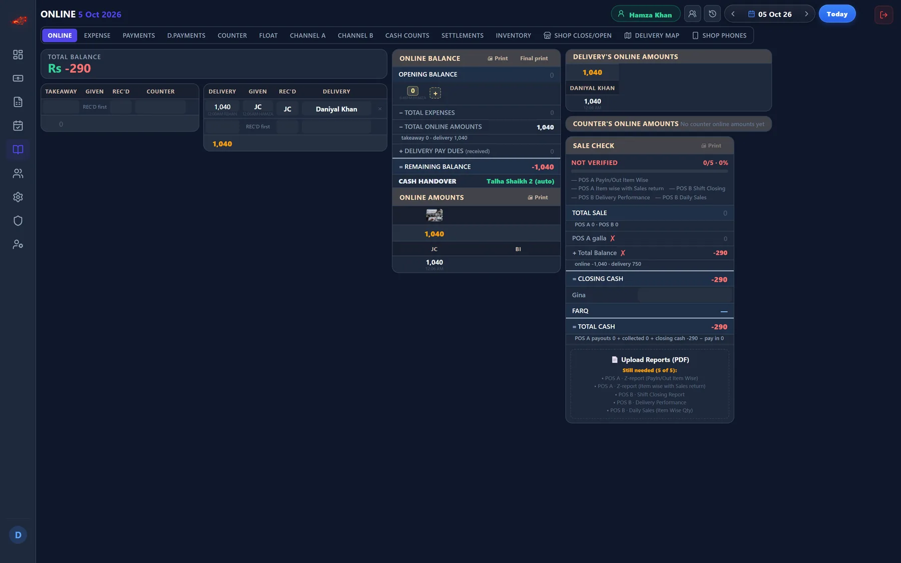
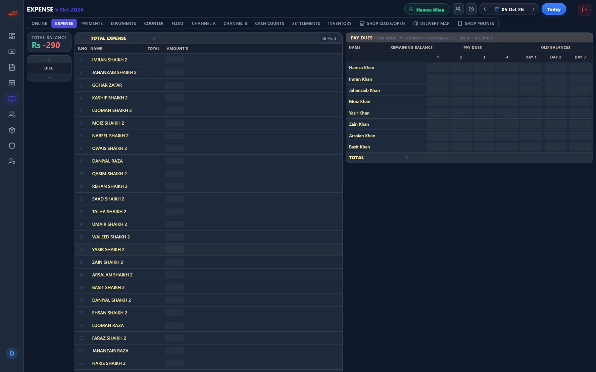
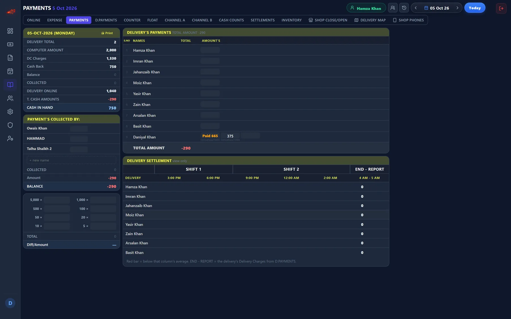
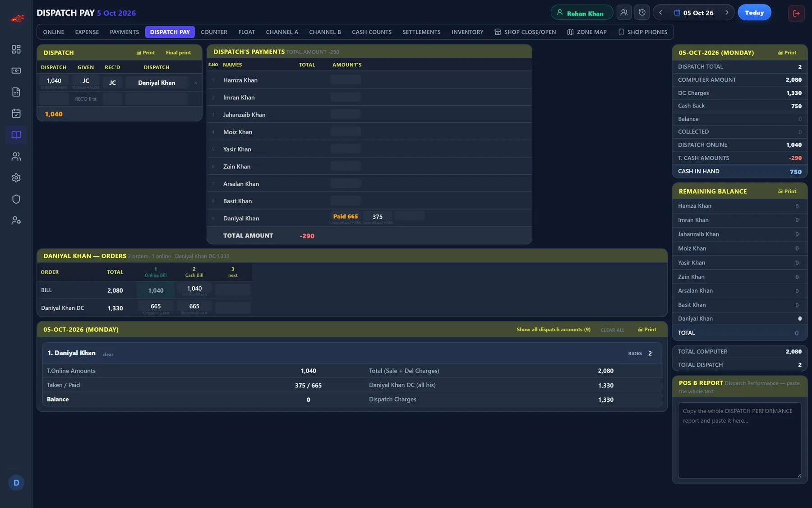
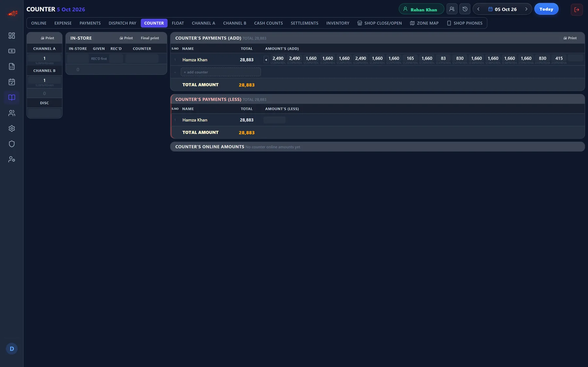
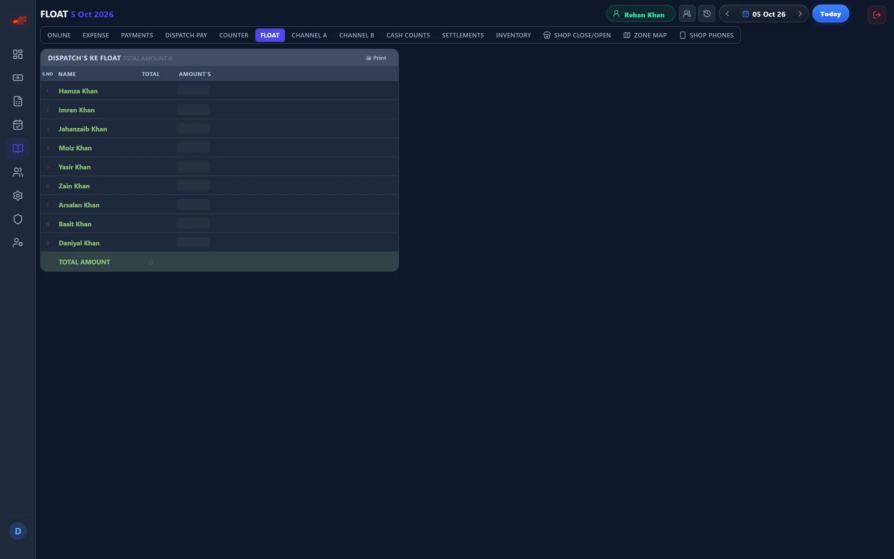
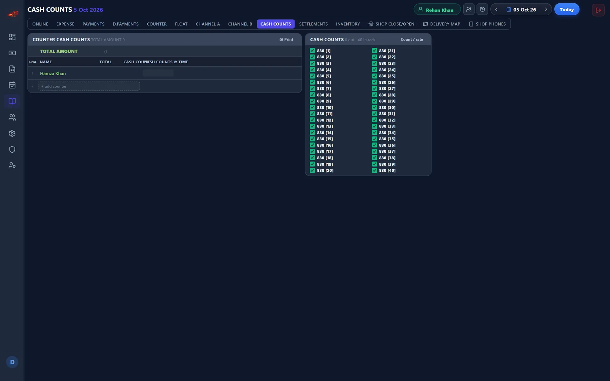
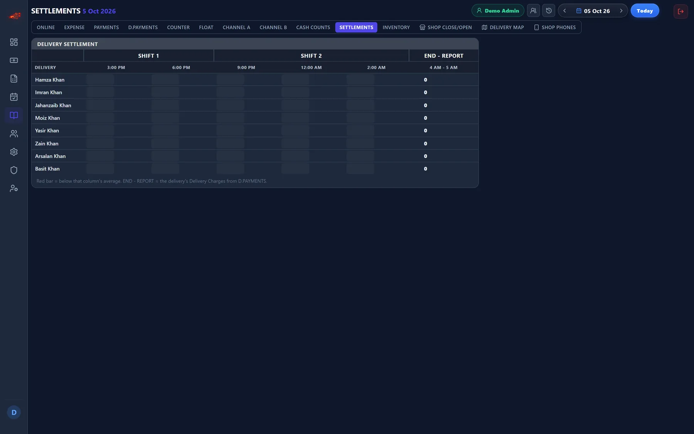
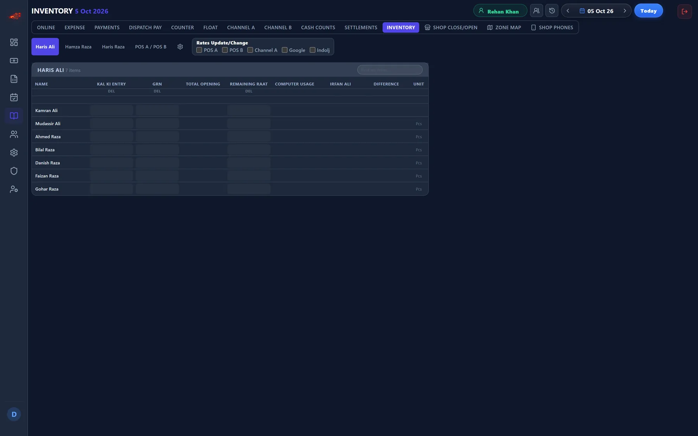
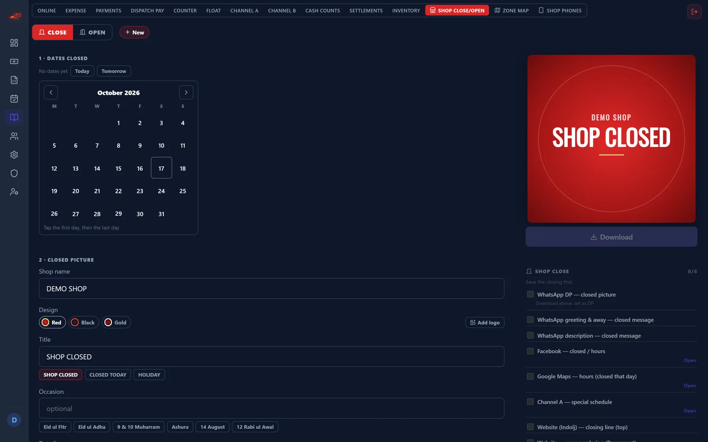

Operations · a module of Axon Attendance
Axon Ledger
Payment reconciliation for a business that takes money in more than one way.
Every branch closes the day on one figure everyone agrees with, and the owner can see from anywhere whether today's cash, transfers and card settlements match what the sales system recorded.

The problem
Money arrives as cash, bank transfers, mobile wallet payments and card settlements, collected by several people across several branches. By the end of the day nobody can say with certainty how much came in, who is still holding cash, or which transfers actually landed.
What it replaced was improvised and fragile: a file per concern, a column per person, and a closing figure nobody could verify.
What it does
One place to record money as it arrives: choose the account, enter the amount, choose the method. What used to be a formula per person is now a query.
Given and Received keep their plain meanings - cash handed over, money confirmed arrived - and anything still waiting on a bank notification is flagged rather than quietly counted.
Eleven linked registers cover a full day: payments, expenses, per-person accounts, float, cash counts, settlements, channels, inventory and the close.
Built per branch and per account, so the same system runs one site or twenty: a new branch, a new payment method or a new person is a record, never a new column.
Details
- Eleven registers for one day, from the first payment received to the cash count at close
- The day cannot be closed until it reconciles against the sales system's own figures
- Per-method totals across every bank and wallet in use, and a running total per account
- Multi-branch from the start: a new branch, method or person is a record, not a new column
- Payments awaiting bank confirmation are held apart instead of being counted
- Every edit is in the history: who changed what, and when
More screens








